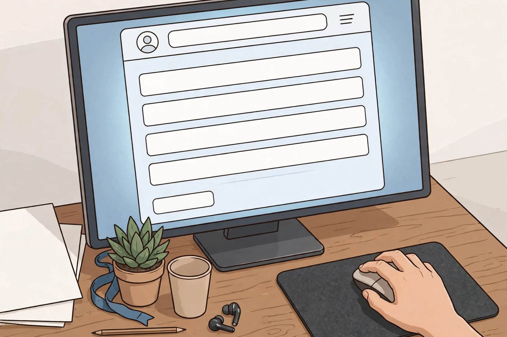

CSC ID কিভাবে পাবেন: রেজিস্ট্রেশন প্রক্রিয়া

নিজের এলাকায় CSC (Common Service Centre) খুলে উদ্যোক্তা হতে চান? তাহলে প্রথমে দরকার CSC ID — অর্থাৎ VLE (Village Level Entrepreneur) হিসেবে রেজিস্ট্রেশন। এই আর্টিকেলে জানুন কোথায় আবেদন করবেন, সাধারণ ধাপগুলো কী, আর কোন ফাঁদ থেকে সাবধান থাকবেন।
📝 কোথায় আবেদন করবেন?
CSC-এর জন্য আবেদন হয় শুধুমাত্র অফিসিয়াল পোর্টালে:
👉 register.csc.gov.in
এটাই VLE রেজিস্ট্রেশনের সরকারি ঠিকানা। অন্য কোনো ওয়েবসাইটে CSC ID-এর জন্য আবেদন করবেন না।
✅ রেজিস্ট্রেশনের সাধারণ ধাপ
- TEC সার্টিফিকেট আগে নিন — নতুন VLE রেজিস্ট্রেশনের আগে TEC (Telecentre Entrepreneur Course) সার্টিফিকেট বাধ্যতামূলক। বিস্তারিত: TEC সার্টিফিকেট গাইড।
- পোর্টালে আবেদন ফর্ম পূরণ করুন — register.csc.gov.in-এ গিয়ে নির্ধারিত ফর্মে নিজের তথ্য দিন।
- কাগজপত্র আপলোড করুন — চাওয়া ডকুমেন্টগুলোর স্ক্যান কপি আপলোড করুন। তালিকা: কী কী কাগজপত্র লাগবে।
- যাচাইকরণ — জমা দেওয়া তথ্য ও কাগজপত্র যাচাই করা হয়।
- অনুমোদন — সব ঠিক থাকলে CSC ID ইস্যু করা হয়।
⚠️ মনে রাখুন: ফি, সময়সীমা ও বিস্তারিত নিয়ম সময়ে সময়ে বদলাতে পারে। আবেদনের আগে অফিসিয়াল পোর্টালে সর্বশেষ তথ্য দেখুন — register.csc.gov.in।
🚨 প্রতারণা থেকে সাবধান!
- CSC ID কেনাবেচা হয় না। কেউ "টাকা দিলে CSC ID পাইয়ে দেবো" বললে সেটা ১০০% প্রতারণা।
- অফিসিয়াল পোর্টাল ছাড়া অন্য কোথাও টাকা পাঠাবেন না।
- সন্দেহ হলে CSC-এর হেল্পলাইন বা অফিসিয়াল ওয়েবসাইটে যোগাযোগ করুন।
🔗 অফিসিয়াল পোর্টাল (সরকারি):
- register.csc.gov.in — VLE রেজিস্ট্রেশন
- csc.gov.in — CSC-এর মূল ওয়েবসাইট
🌐 আরও নতুন নতুন তথ্যের জন্য আমাদের ওয়েবসাইট ভিজিট করুন: aicombo90.github.io/dafadar-online-seva — ওয়েবসাইটটা মোবাইলে সেভ/বুকমার্ক করে রাখুন যাতে হারিয়ে না যায়!
💬 তাজা আপডেট সবার আগে পেতে আমাদের WhatsApp গ্রুপে যোগ দিন: WhatsApp গ্রুপে যোগ দিন
📺 ভিডিওতে দেখতে চান? আমাদের YouTube চ্যানেল সাবস্ক্রাইব করুন: youtube.com/@DafadarOnlineSeva